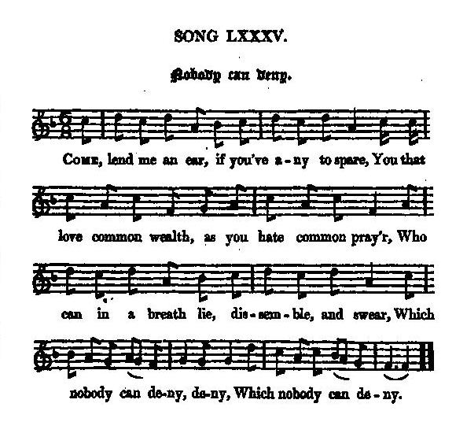

Nobody can deny
Sans qu'on trouve à redire rien
Opportunism & Hypocrisy
Tune - Mélodie"Nobody can deny "
from Hogg's "Jacobite Reliques" part I, N°85
Sequenced by Christian Souchon


|
NOBODY CAN DENY
1. Come, lend me an ear, if you've any to spare, You that love common wealth, as you hate common pray'r, Who can in a breath lie, dissemble, and swear, Which nobody can deny, deny, Which nobody can deny. 2. The times are so fickle, I vow and profess, Men know not which party or way to embrace; But I'll still be for those that are least in disgrace, Which nobody can deny, &c. 3. Sometimes I'm a rebel, and sometimes a saint; Sometimes I can swear, and at other times cant ; There's nothing but grace, thanks to Jove, I do want; Which nobody can deny, &c. 4. Of gracious King William I was a great lover, Did join with a party that was for another : I drunk the king's health, take it one way or t'other; Which nobody can deny, &c. 5. I frequently went into the Whigs' meeting, Where there I did meet with such sorrowful greeting, Makes me hate long prayers, with five hours prating; Which nobody can deny, &c. 6. All this I can do when I'm foolish and merry, And I can sing psalms as if never weary. But I still find more joy in a boat to the ferry; Which nobody can deny, &c. 7. I can pledge any health my companions drink round, And can say, Heaven bless! when I wish hell confound! I can hold to the hare, and run with the hound; Which nobody can deny, deny, Which nobody can deny. Source: "The Jacobite Relics of Scotland, being the Songs, Airs and Legends of the Adherents to the House of Stuart" collected by James Hogg, published in Edinburgh by William Blackwood in 1819. |
SANS QU'ON TROUVE A REDIRE RIEN
1. Prête l'oreille, s'il t'en reste encore une, Ami du bien commun, non des latries communes, Qui se renie quand la cause est opportune, Sans qu'on trouve à redire rien, non rien, Sans qu'on trouve à redire rien. 2. Nous vivons une époque troublée, c'est vrai. Nul ne sait à quel clan, à quel parti se vouer Au secours de la victoire il faut voler, Sans qu'on trouve à redire rien... 3. Je me sens tantôt rebelle, tantôt saint Tantôt jureur et tantôt ne jurant de rien, Vivre en paix, c'est le voeu de tous et le mien Sans qu'on trouve à redire rien... 4. Du bon roi Guillaume j'étais partisan, Puis j'ai choisi le parti de son opposant. Je bois au roi: chacun comme il veut l'entends Sans qu'on trouve à redire rien... 5. Autrefois j'allais aux réunions des Whigs, Où l'on m'accueillait avec des propos contrits: Leurs sermons sans fin, comme je les vomis, Sans qu'on trouve à redire rien... 6. Ainsi fais-je, quand je me sens plein d'entrain Je chante des psaumes, et ne m'en lasse point, Mais préfère le navire au va-et-vient. Sans qu'on trouve à redire rien... 7. Quand on porte un toast, moi je le porte aussi Je dis "Dieu le garde" et pense "Qu'il soit maudit!" J'applaudis le chien, moi du lièvre l'ami, Sans qu'on trouve à redire rien, non rien, Sans qu'on trouve à redire rien. (Trad. Christian Souchon(c)2010) |
|
"This is rather a good song, with a singular original ranting tune of one measure. It is rather a song in mockery of the national tenets and character than of any particular party."
James Hogg in "Jacobite Relics" (1819) |
"Voila une chanson assez bien venue, avec un rythme à deux temps original et singulier. On s'y moque plus d'une certaine tournure d'esprit nationale que de tel ou tel parti".
James Hogg in "Jacobite Relics" (1819) |
|
|
|